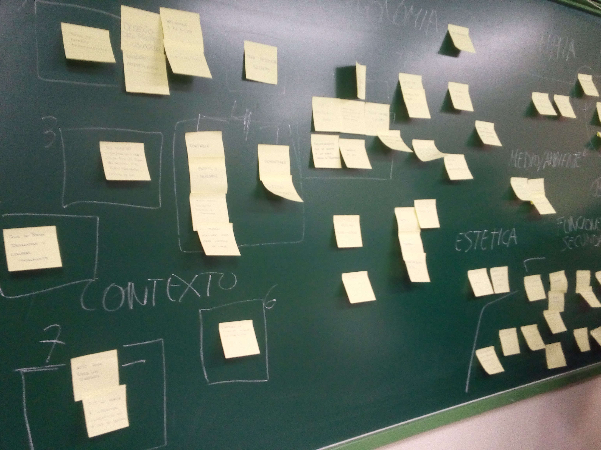
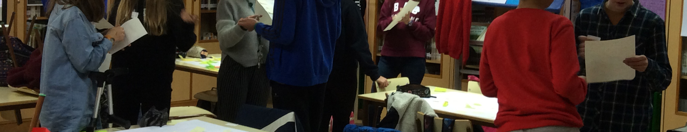

Selección de ideas
1- Clasificación de ideas
Una vez que hemos conseguido generar un número elevado de ideas, las ordenamos para poder seleccionar alguna; para ello las clasificamos por categorías.
Si por ejemplo estamos generando ideas para re-diseñar la clase, podemos clasificar todas las ideas que hemos generado según tengan que ver con comunicación, espacio, materiales, organización, actividades, etc.
Clasificando las ideas podremos visualizar el número de ideas que tenemos de cada categoría y podremos, en su caso, aportar alguna nueva idea.
También podremos observar que hay ideas parecidas. Decidiremos si las unificamos o si tienen suficiente entidad para diferenciarse. Si tenemos un montón de notas adhesivas pegadas en una pared o en una pizarra, iremos moviendo las notas y generando los conjuntos necesarios por categorías.
Utilizaremos notas adhesivas de otros colores para escribir los títulos de las categorías, si lo consideramos útil.

2- Selección de ideas. Tabla de valoración
Una vez que las hemos clasificado y las hemos comentado en el equipo (hay veces que es necesario que alguien explique o matice una idea que ha propuesto porque no termina de entenderse), procederemos a elegir la idea.
Aunque soy partidaria a elegir por consenso, cuando hay muchas ideas no es posible. Entonces los miembros del equipo votan.
Cada participante elige la idea más viable, la más innovadora y la que mejor se adapta a los usuarios. Pegando gomets o haciendo una marca, cada uno muestra sus preferencias. No se intenta convencer a nadie, no se influye en las decisiones de los demás.
Ya no queda más que contar gomets o marcas y encontrar la idea o ideas más votadas. Si hay empate volveremos a votar entre las finalistas o analizaremos si es viable hibridar las ideas ganadoras.
Tabla de valoración: En algunas ocasiones, cuando hay una dificultad mayor para la toma de decisiones, utilizamos una ficha llamada tabla de valoración. Primero revisamos el pliego de especificaciones (por eso es recomendable redactar siempre uno) y extraemos las cuestiones más relevantes, los objetivos fundamentales. Por ejemplo, algunas especificaciones pueden ser: que el resultado se pueda ejecutar en un tiempo corto, que sea original, que tenga impacto en el barrio, o que motive a los alumnos del centro, que sea divertido, que tenga que ver con algún contenido o aprendizaje en concreto…
Una vez seleccionadas las especificaciones, se escriben cada una en una casilla. Las especificaciones se pueden ponderar según la importancia que tengan en el proyecto. Se debe escribir cada ponderación si la hay, sobre la línea de puntos. A continuación se puntúa cada idea de 0 a 5, según sea su cumplimiento de cada especificación del proyecto (siendo 0: no cumple y 5: cumple perfectamente) y se calcula la media ponderada para conocer la puntuación de cada idea.
De esta forma obtendremos la idea más adecuada.
3- Dinámica selección con música:
Si se ha hecho un brainstorming para generar temas de trabajo (por ejemplo para un proyecto de participación en el aula) esta dinámica sirve para seleccionar uno o varios temas (puede ser uno por equipo)
Es una dinámica que gusta al alumnado por ser divertida y diferente.
Es una forma de seleccionar rápidamente un tema de trabajo.
Cada uno de los o las participantes elige un tema de los que han salido en la lluvia de ideas y lo desarrolla en un folio: describe el tema y hace algún dibujo o esquema explicativo.

Para eso tienen diez minutos.
- Cuando han terminado, cada persona coge su hoja de papel y (con una música divertida, tipo la del Show de Benny Hill) se mueve bailando por el espacio.
- Cuando la música se para cada persona busca a la que tiene más cerca.
- Cada participante le cuenta a su pareja cuál es su tema y recibe una nota del 1 al 10, según lo interesante que le haya parecido.

- Una vez que las dos personas emparejadas han puesto nota al tema del compañero se cambian las hojas.
- Con la hoja del tema de la otra persona en la mano vuelven a bailar al ritmo de la música hasta que esta se para y se acercan a otra persona.
- El proceso se repite unas 5 veces.
- Cuando termina la dinámica habrá 5 puntuaciones en cada hoja.
Solo falta sacar la media y ver cuales han sido los temas que más han interesado al grupo. Si hay varios equipos, por ejemplo 3, se leen los tres temas que más han interesado y cada persona se apunta a un tema, es decir, a un equipo.
De este modo se forman los equipos.
Si hay un equipo que tiene muchos integrantes y otro que tiene pocos se insta a las personas a cambiarse y a equilibrar los equipos.

Design Thinking en educación por Elena Bernia bajo licencia Creative Commons Reconocimiento-NoComercial-CompartirIgual 4.0 Internacional License.